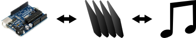
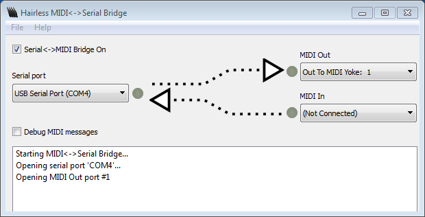
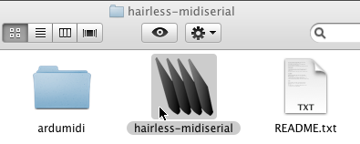
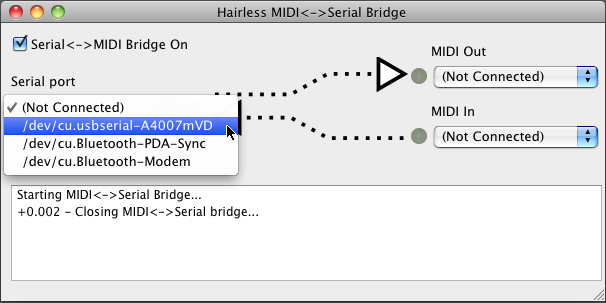
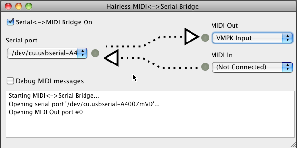

Hairless MIDI<->Serial Bridge is the easiest way to connect serial devices (like Arduinos) to send and receive MIDI signals. 100% Free Software. For Mac OS X, Windows & Linux.

Download ⊕ System Requirements ⊕ Getting Started ⊕ FAQ & Troubleshooting
Cross platform - same program on OS X, Windows, Linux.
Has no dependencies, can be run out of the box on nearly any computer.
Improves FTDI latency on Linux & Windows. This means better MIDI latency when using FTDI-based devices like the Arduino Duemilanove.
Compatible with the Arduino MIDI Library (see tip.)
Compatible with the Linux program ttymidi, and their Ardumidi library (included in the download.)
OS X 10.4 or later, either PowerPC or Intel based Macs.
Linux, any common x86 or x64 (with 32-bit compatibility libraries) Linux distribution.
If you’re a command line user in Linux, you may want to try the very nice ttymidi command line bridge program instead.
Windows XP or later, 32- or 64-bit.
NB: To convey Windows MIDI data from one bit of software to another, you’ll need a Virtual MIDI passthrough driver. We recommend loopMIDI, or there is alternatively the older MIDI Yoke (MIDI Yoke is not recomended for Vista or newer.)
Windows Vista, 7 & 8 special notes:
To use Hairless MIDI<->Serial Bridge’s automatic FTDI latency reduction feature, you may need to “Run As Administrator” when you launch the program.
I never got around to making a demo video, but Greg was kind enough to let me link his Arduino tone synth video here:
Version 0.4 - 7 August 20102
When using ‘Debug MIDI Messages’, channel numbers now range 1-16 not 0-15, as per MIDI standard.
Add two-way (output to serial port) support for SysEx, time & sense messages.
Added latest & final version of Ardumidi library (Ardumidi is now longer being developed, another option is the Arduino MIDI Library.)
(Linux) fixed a bug where ‘ACM’ type USB serial devices (like Arduino UNO) weren’t recognised.
Version 0.3 - 8 May 2012
Ardumidi updated to work with Arduino 1.0 (thanks to Jorge Falcão.)
Fixed bug with receiving simultaneous MIDI notes.
Added support for running MIDI status, as used by Arduino MIDI Library.
Now supports variable-length SysEx (“System Extension”) data messages.
Version 0.2 - 28 September 2011
Fixed issue where UI could become overloaded if serial device sent excess data.
Version 0.1 - Initial release, 20 September 2011.
Source is all available on github.
Launch “Hairless MIDI<->Serial Bridge” by double-clicking the application.
Plug in your serial MIDI device, if it’s not already.
Select Preferences from the menu and check that the serial settings look correct (defaults are 115200bps, no flow control.)
Choose your serial port from the “Serial port” box.
Launch the music app that will be sending and/or receiving MIDI data.
Set your music app to send or receive MIDI data, if it’s not enabled already.
Select your app’s MIDI port from the MIDI dropdown (on Windows, set both sides to connect to the same loopMIDI virtual MIDI port.)
Go crazy! You should see lights flashing in the UI when MIDI and/or serial messages come through.
You can enable “Debug MIDI messages” if you want to see all of the MIDI messages as they come through the bridge.
To disable the bridge, uncheck the “Serial<->MIDI Bridge” checkbox at the top of the window.
Please report it via the Issues page on github.
If you’re a programmer and you’re feeling awesome, I’d love it if you could submit a github pull request (or a patch) along with the bug report. :)
The Arduino MIDI Library is a newer MIDI library than Ardumidi, and seems to be the way of the future.
To use this library with Hairless Bridge, you can mostly follow their instructions exactly. The only difference is that you need to initialise the Serial port after the MIDI library, like this:
void setup() {
MIDI.begin();
Serial.begin(115200);
}You need to disable the Serial<->MIDI Bridge before sending other data (like Arduino programming) to the serial port. You can do this by unchecking the “Serial<->MIDI Bridge” checkbox in the interface.
Check the serial port settings (like baud rate) are correct (select Preferences from the menu.) Try disabling Flow Control if it was enabled.
Try using a Serial Terminal program like minicom or Hyperterminal and see if any data is received from there.
You may need to enable the “IAC” virtual MIDI port. This makes a “channel” that can join the two together:
You need to create a loopMIDI virtual port (there’s a link under System Requirements) to create a “channel” that joins the two together.
After intalling loopMIDI, launch it and click the ”+” button to create a new virtual MIDI port with the specified name. Both Hairless Bridge and your MIDI program should then connect to this port.
You may need to use the “Passthrough” port in Linux ALSA to join them together, or use the “Create Virtual MIDI channel” feature if it exists in your other program.
It would be nice to be able to use the hardware MIDI baud rate, 31250bps. This means the logical signals from Hairless Bridge can be used with real MIDI hardware, with just some electronics to adjust the serial voltages to become MIDI current loop signals.
Unfortunately, most computer serial ports can’t actually talk at 31250bps. For historical & technical reasons they’re usually limited to multiples of 300bps.
However, if you’re prepared to hack around a bit, the FTDI USB/Serial chip (as found on the Arduino Duemilanove) can talk the native MIDI rate. Have a read through these Arduino forum posts and you can see how to hack the driver on OS X or Windows, so that when you choose a different rate (like 38400bps) it is actually 31250, behind the scenes.
This is not a supported configuration for Hairless Bridge, but it can be made to work in some circumstances.
Do you see any hairy yaks around here? No? Hairless it is. :)
That is also where the poor excuse for an icon (supposed to look like clippers) came from. :)
For a workshop, ”Drop-Dead Simple MIDI Controllers with Arduino”, as part of the Electrofringe 2011 festival in Newcastle, Australia.
While preparing I couldn’t find any MIDI<->Serial bridges that were fully cross-platform, low latency and didn’t have setup dependencies. So I decided to shave a yak and make one. :)
Big thanks to the authors of the Free Software libraries that Hairless MIDI<->Serial Bridge builds on. Those are Qt, qextserialport, RtMidi and ArduMIDI, from the ttymidi project.
More details can be found in the About Box of Hairless MIDI<->Serial Bridge.
Hairless MIDI<->Serial Bridge is released under the GNU Lesser General Public License 2.1, as described in the About Box for compiled versions and the LICENSE file for source versions.
Incorporated libraries are sometimes relicensed with additional terms, also as described in these places.
This page and the Hairless MIDI<->Serial Bridge are Copyright (c) 2011 Angus Gratton.